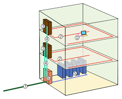
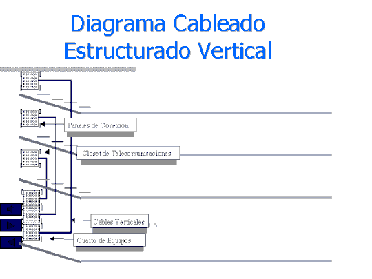
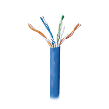
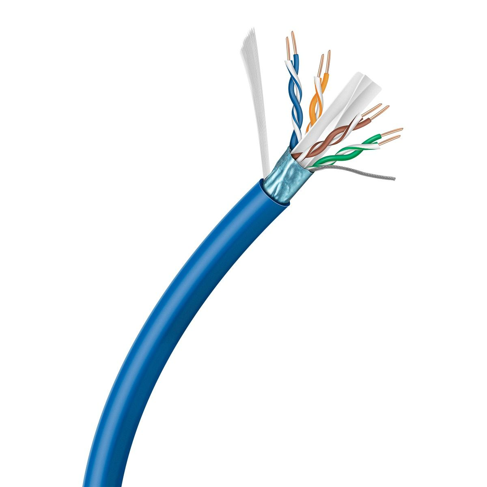
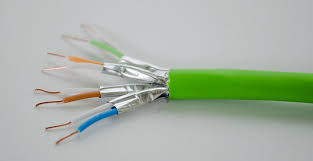
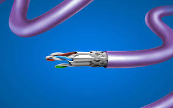
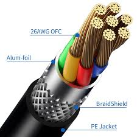

¿Que es el cableado Horizontal?
Descripcion: El cableado horizontal es una parte fundamental del diseño y la implementación de redes de cableado estructurado en un edificio. Se refiere a la instalación de cables que conectan los dispositivos finales (como computadoras, teléfonos, impresoras, etc.) a los puntos de consolidación o paneles de distribución en el mismo piso o área del edificio. A continuación, se presenta una descripción técnica detallada del cableado horizontal
¿Que es el cableado Vertical?
Descripcion: El cableado vertical en una red se refiere a la instalación de cables que conectan los diferentes pisos o niveles de un edificio o entre diferentes áreas dentro de un mismo edificio. Este tipo de cableado se utiliza para conectar los paneles de parcheo (patch panels) o equipos de red en el centro de datos con los dispositivos de red en los distintos pisos o áreas.
Cable de Par Trenzado Categoría 5e (Cat5e)
Descripcion: El Cable de Par Trenzado Categoría 5e (Cat5e) es una de las opciones más comunes para el cableado en redes Ethernet.
Cable de Par Trenzado Categoría 6 (Cat6)

El Cable de Par Trenzado Categoría 6 (Cat6) es una mejora significativa respecto al Cat5e, ofreciendo mayores velocidades y un mayor ancho de banda. Es ampliamente utilizado en redes de cableado estructurado para satisfacer las necesidades de redes modernas que requieren un rendimiento superior.
Cable de Par Trenzado Categoría 6a (Cat6a)
Descripcion: El Cable de Par Trenzado Categoría 6a (Cat6a) es una excelente opción para redes que requieren un alto rendimiento y capacidad de ancho de banda. Ofrece mejoras significativas en velocidad y protección contra interferencias ideal para entornos de red de alta demanda, centros de datos y aplicaciones empresariales avanzadas.
Cable de Par Trenzado Categoría 7 (Cat7)
Descripcion: Ofrece una protección superior contra interferencias electromagnéticas y diafonía, lo que lo hace ideal para aplicaciones de alta demanda y entornos críticos como centros de datos.
Cable de Par Trenzado Categoría 7a (Cat7a)
Descripcion: El Cat 7A posee especificaciones aún más estrictas para diafonía y ruido en el sistema que cat 7. Se estima que comenzó a usarse desde el 2008 y tiene como vigencia el año 2024.
Cable de Par Trenzado Categoría 8 (Cat8)
Descripcion: El cable Ethernet Cat 8 es la abreviatura de cable Ethernet Categoría 8, la última tecnología Ethernet que se creó para permitir velocidades de transferencia de datos y frecuencia más altas. Estos cables pueden gestionar hasta un ancho de banda de 2000 MHz y ofrecer velocidades de 40 Gbps.